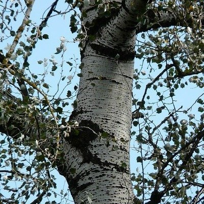

Ayuntamiento de Senés
JARDIN BOTANICO DE ESPECIES AUTOCTONAS DE SENES

Populus alba / Populus nigra

El álamo (Populus alba / Populus nigra) es un árbol caducifolio de rápido crecimiento, característico de zonas húmedas y cursos de agua en el ámbito mediterráneo. Destaca por su altura, su tronco recto y su capacidad para formar alineaciones naturales en riberas y caminos.
Presenta una copa amplia y ligera, con hojas de forma variable según la especie, generalmente lobuladas o triangulares. En el caso del álamo blanco, el envés de las hojas es plateado, lo que genera un efecto visual muy característico con el viento.
Su crecimiento rápido y su capacidad de adaptación lo convierten en una especie clave en la estabilización de suelos y en la creación de espacios de sombra en entornos rurales.
El álamo se distribuye por gran parte de Europa y regiones templadas, siendo especialmente frecuente en zonas de ribera, vegas y terrenos con disponibilidad de agua.
En el entorno de Senés, se encuentra asociado a ramblas, fuentes y zonas más húmedas, donde contrasta con el paisaje seco predominante.
Su presencia es indicadora de suelos frescos y de cierta disponibilidad hídrica en el terreno.
El álamo ha sido utilizado tradicionalmente por su madera ligera y fácil de trabajar, empleada en carpintería, embalajes y otros usos sencillos.
Además, algunas partes del árbol han sido utilizadas en medicina popular por sus propiedades antiinflamatorias y calmantes.
Su principal valor es ecológico, ya que contribuye a la fijación del suelo y a la conservación de ecosistemas de ribera.
El álamo simboliza la flexibilidad y la adaptación, debido a su capacidad de crecer rápidamente y adaptarse a diferentes condiciones.
También representa el vínculo con el agua y la vida, al estar asociado a zonas húmedas en entornos secos.
En Senés, el álamo blanco se cría en senés en zonas secas porque resiste la sequía mejor que el negroha sido utilizado principalmente como árbol de sombra en zonas cercanas al agua y como recurso para madera ligera. su madera al ser floja se utilizaba para cosas de poca importancia.
Se decía que las infusiones de sus hojas favorecían para expulsar las arenillas de las vías urinarias.
También ha formado parte del paisaje tradicional en ramblas y caminos.
El álamo florece a finales del invierno o principios de primavera, produciendo amentos. Posteriormente, libera semillas rodeadas de filamentos algodonosos que facilitan su dispersión por el viento.
Las semillas del álamo están rodeadas de una especie de “algodón” que facilita su transporte por el aire.
Es una de las especies más utilizadas en reforestación de zonas húmedas por su rápido crecimiento.
El movimiento de sus hojas con el viento produce un sonido característico muy reconocible en entornos naturales.